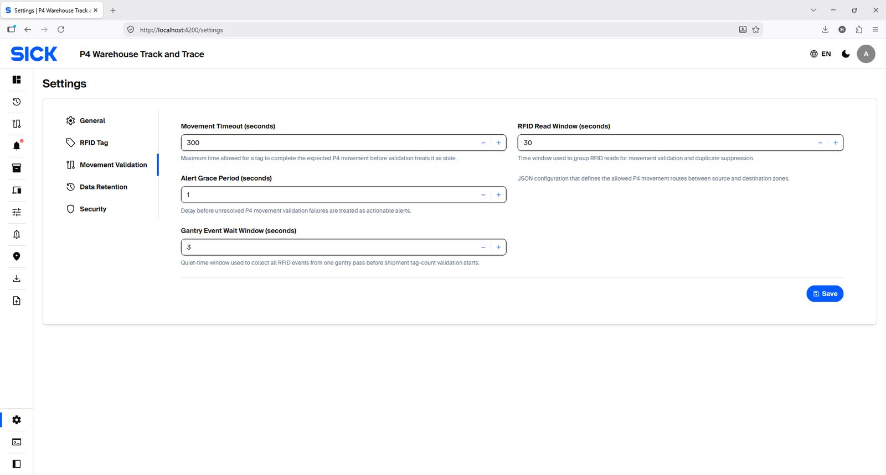

Statuses & Default Settings
Quick reference for Asset status, Movement status and default system
settings.
Asset statuses
| Status |
Meaning |
|
RECEIVED
|
Registered/received and not yet stored. |
|
IN_STORAGE
|
Stored in a Warehouse/Rack and eligible for warehouse
movement or Dispatch preparation.
|
|
READY_FOR_DISPATCH
|
Successfully checked out/staged and waiting for final R1
exit.
|
|
DISPATCHED
|
Final outbound dispatch completed. |
Asset Movement statuses
| Status |
Meaning |
| PENDING |
Movement request exists and is waiting for the required RFID
events.
|
| COMPLETED |
Expected source/destination sequence completed successfully.
|
| TIMED_OUT |
Destination confirmation did not arrive before timeout +
grace processing.
|
| FAILED |
Movement could not be accepted because validation failed.
|
| CANCELLED |
Movement was intentionally cancelled/removed from active
processing.
|
Default system settings
| Setting |
Source default |
Area |
| Language |
English |
General |
| Time zone |
Asia/Singapore |
General |
| Date format |
YYYY-MM-DD |
General |
| Time format |
HH:mm:ss |
General |
| Generated RFID ID length |
24 |
RFID Tag |
| Movement fallback timeout |
3600 s (1 hour) |
Movement Validation |
| Physical RFID read window |
10 s |
Movement Validation |
| Alert grace fallback |
60 s |
Movement Validation |
| Gantry event wait window |
3 s |
Movement Validation |
| RFID event idempotency retention |
7 days |
Data retention |
| Scan History retention |
730 days (2 years) |
Data retention |
| Resolved Alert retention |
365 days (1 year) |
Data retention |
| Asset Movement retention |
365 days (1 year) |
Data retention |
| Import / Export history retention |
90 days (3 months) |
Data retention |

Admin Settings — Movement Validation example · Click image to
enlarge.